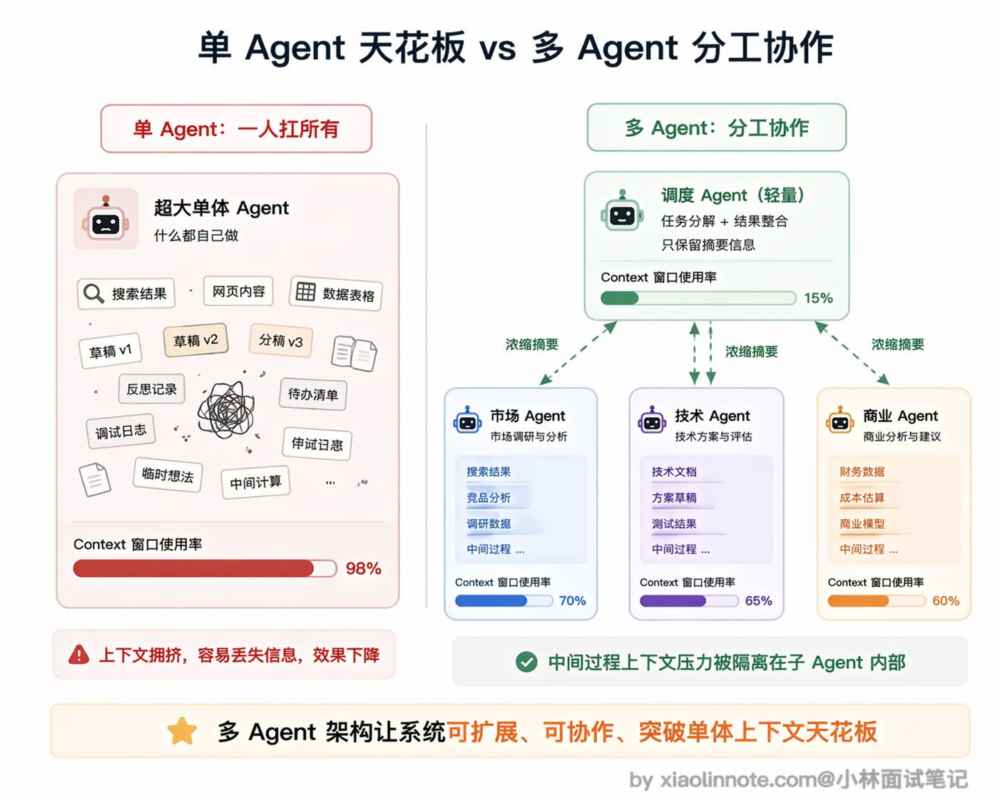
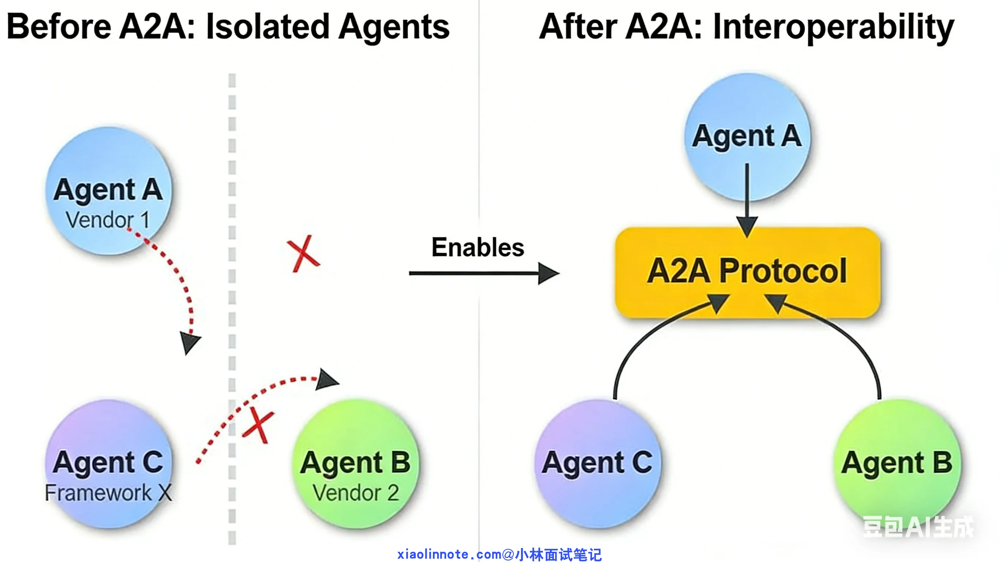
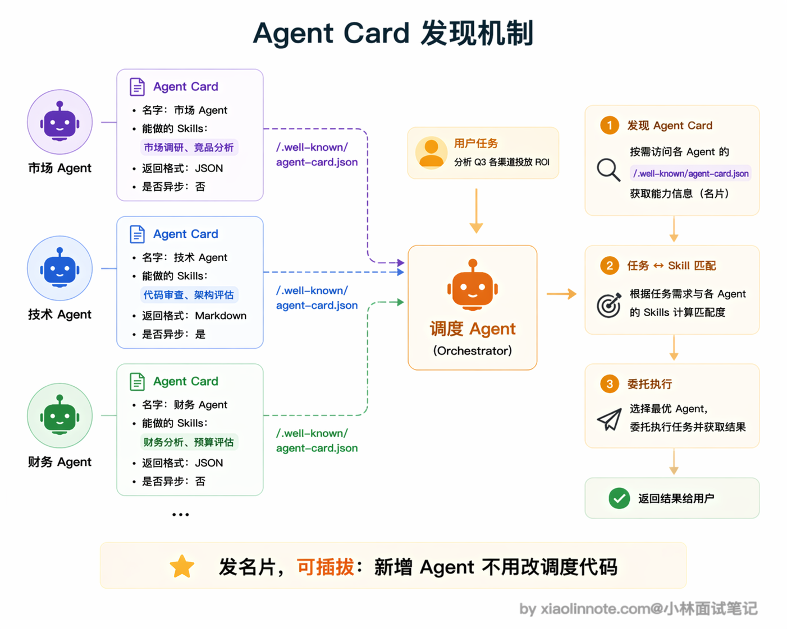
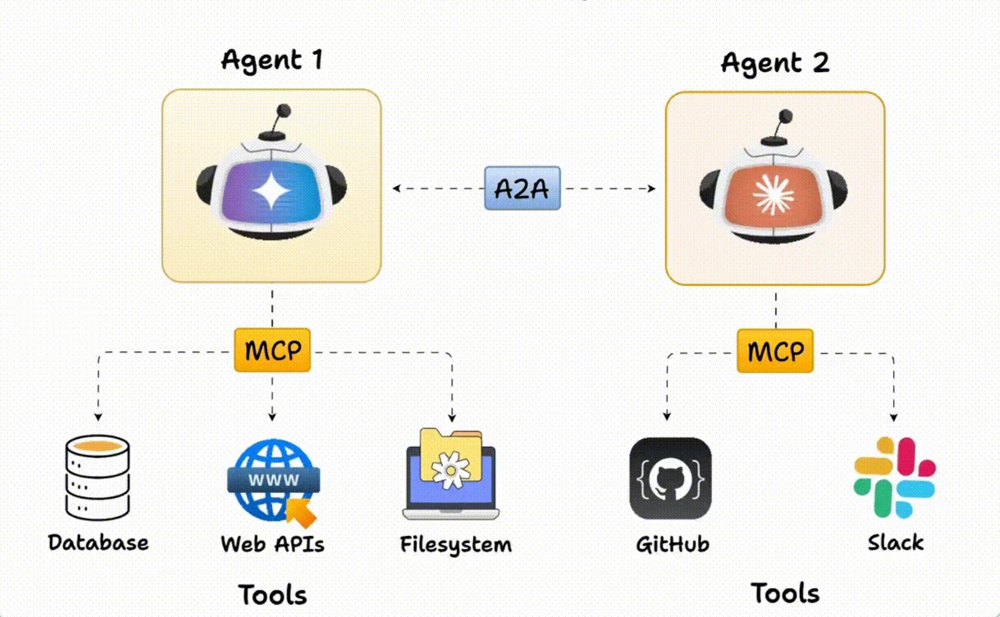
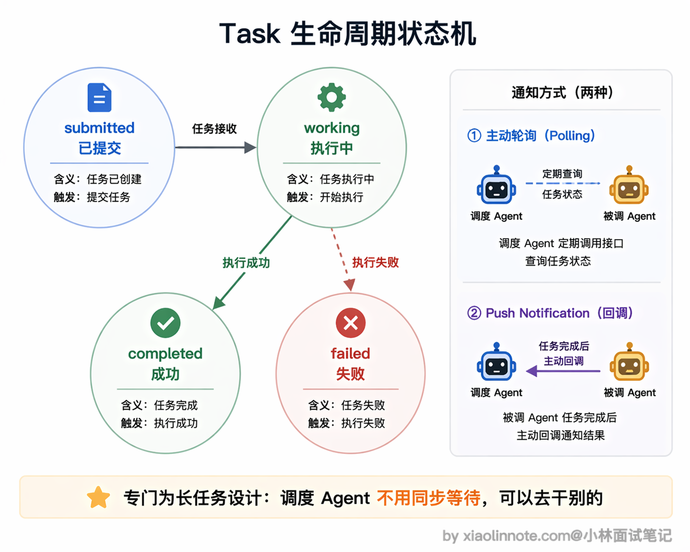
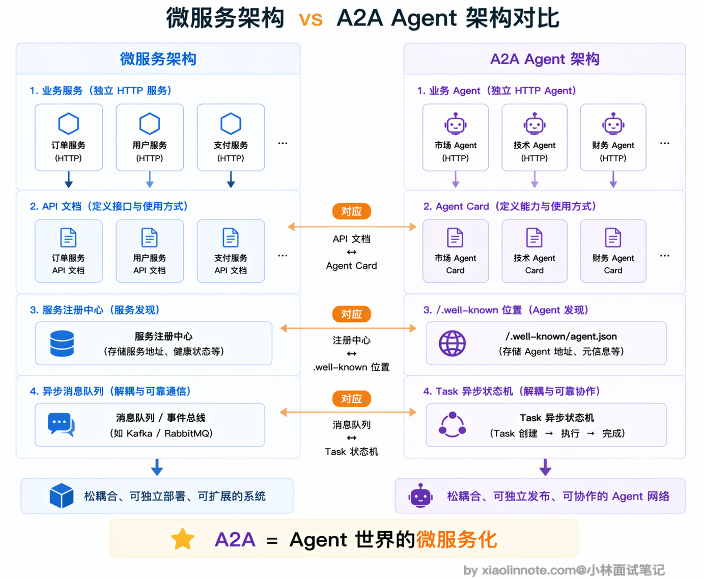
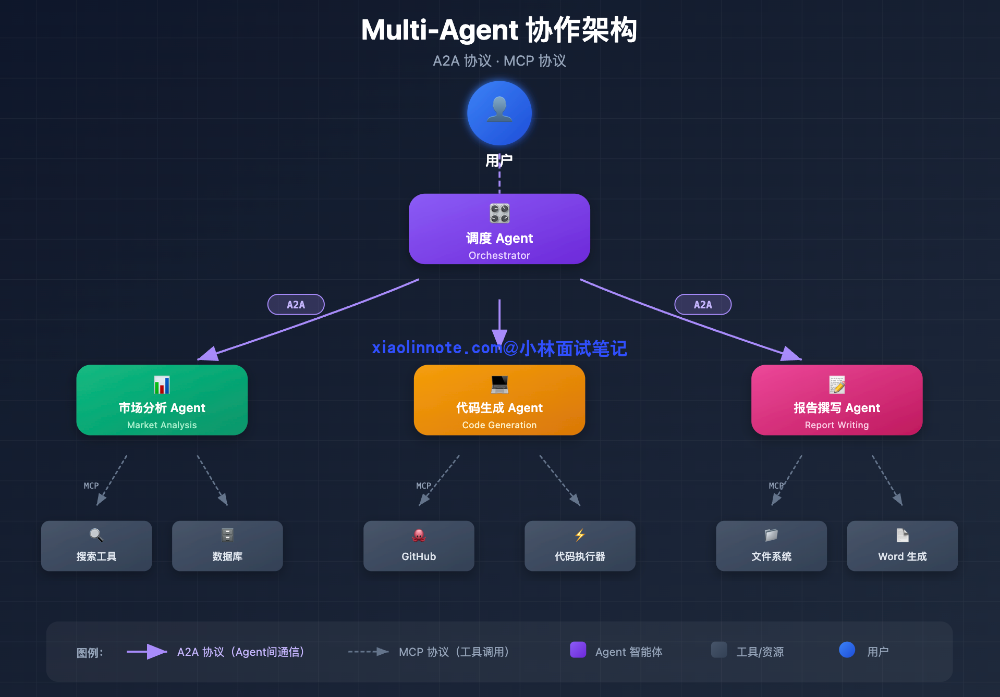
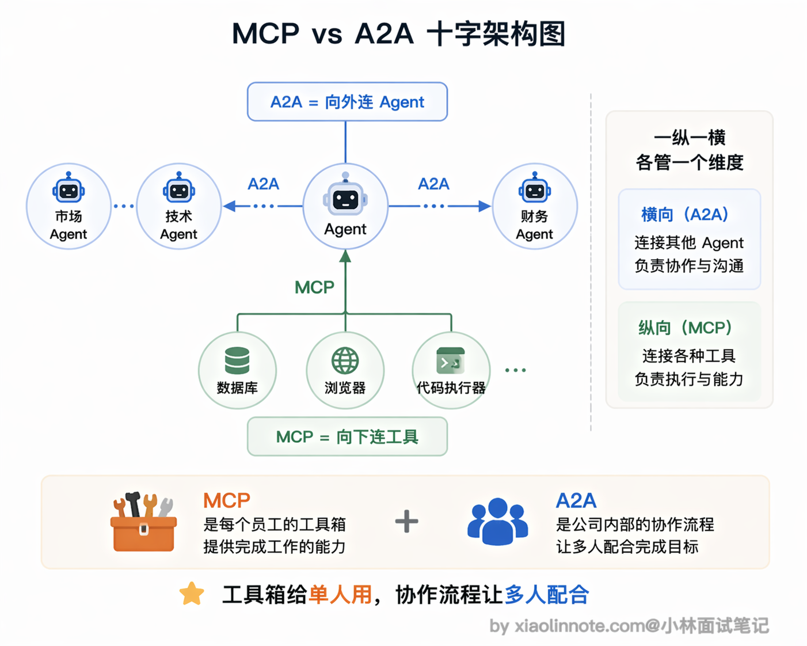

什么是 A2A 协议？它和 MCP 协议的区别是什么？
👔面试官：说说什么是 A2A 协议，它和 MCP 有什么区别？
🙋♂️我：A2A 是 Google 出的一个协议，我理解它就是 MCP 的竞品吧，Google 想自己搞一套标准来替代 MCP。
👔面试官：竞品？MCP 解决的是什么问题，A2A 解决的又是什么问题，你搞清楚了吗？这两个协议面向的对象都不一样，怎么会是竞品？
🙋♂️我：那 A2A 应该是用来让 Agent 调用工具的另一种方式？就是和 MCP 一样连工具，只是协议格式不同？
👔面试官：A2A 全称是 Agent-to-Agent，注意看名字，是 Agent 到 Agent，不是 Agent 到工具。MCP 是 Agent 连工具和数据，A2A 是多个 Agent 之间互相通信协作。一个向下连工具，一个向外连 Agent，方向完全不同。你再想想，为什么需要多个 Agent 协作，单个 Agent 不够用吗？
确实，A2A 和 MCP 经常被放在一起比较，但很多人把它们的定位搞混了。下面我从「单个 Agent 的天花板」讲起，把 A2A 的设计思路和它与 MCP 的关系理清楚。
💡 简要回答
A2A（Agent-to-Agent）是一个面向 Agent 间协作的开放协议，最初由 Google 推动；项目治理、版本和绑定会演进，工程上应以当前规范与对端 Agent Card 为准。
我理解它和 MCP 的区别是这样的：MCP 解决的是「单个 Agent 怎么连工具和数据」，A2A 解决的是「多个 Agent 之间怎么分工协作」。
一个 Agent 通过 A2A 可以把任务委托给另一个 Agent，接收方通过能力声明告诉调用方支持的交互方式；协议模型可覆盖直接消息、带状态的长任务、流式更新和 webhook/push，具体能力要协商。
两者是互补的，不冲突：MCP 向下连工具，A2A 向上连 Agent，在复杂的多 Agent 系统里这两个通常都要用到。
📝 详细解析
为什么单个 Agent 不够用，上下文和专业边界
要理解 A2A 是干什么的，得先把「单 Agent 的天花板」搞清楚。
一个 Agent 可以抽象为模型、状态/上下文、策略编排、工具与输出；每个维度都有边界。拆成多个 Agent 可能隔离上下文与权限，但也会增加通信、协调、重复上下文和失败面。
首先是工具数量的限制，你不可能给一个 Agent 装 100 个工具，模型处理起来效率极低，容易混乱。
其次是上下文窗口的限制，128K tokens 听起来很多，但复杂任务积累的中间产物，搜索结果、草稿、反思记录，会很快把窗口塞满，后面的生成根本顾不上前面写了什么。
最后是专业能力的限制，同一个 Agent 既做代码审查又做市场分析，不如专门为各自任务配置或微调的 Agent 效果好。
举一个具体任务：「帮我做一份 AI 编程工具的竞品分析报告，要有行业趋势、技术对比、商业模式分析和 SWOT」。让单个 Agent 做这件事，问题是：搜索结果和草稿会把上下文撑满，等到写 SWOT 时，前面的行业趋势分析早就被挤出了有效注意力范围；而且市场调研和技术分析需要不同的知识侧重，一个 Agent 很难全面兼顾。

你可能会问，拆成多个 Agent 协作，上下文压力就真的变小了吗？
关键就在这里：调度 Agent 把「做行业趋势分析」委托给市场 Agent，市场 Agent 自己去搜几十个网页、写草稿、反复迭代，这些中间过程都在它自己的上下文里。任务做完，它只把最终结论（比如一份几百字的摘要）通过 A2A 返回给调度 Agent。
调度 Agent 可以只接收摘要或结构化产物，从而隔离部分中间过程；但这不是 A2A 自动完成的，摘要可能丢失证据，调用方仍需要求来源、版本、置信度和可追溯 artifact。

解决方案很自然：把任务拆开，交给不同的专业 Agent 并行处理，最后汇总。一个「调度 Agent」负责任务拆分，「市场分析 Agent」专门做趋势调研，「技术研究 Agent」专门做工具对比，每个只需聚焦自己擅长的部分，整体效果远好于一个 Agent 包揽所有。
多 Agent 的基础问题，Agent 之间怎么互相认识？
多 Agent 系统有一个绕不开的基础问题：Agent A 要把任务委托给 Agent B，它得先知道 B 能做什么。但怎么知道呢？
最笨的方案是写死配置：A 的代码里硬编码「B 可以做竞品分析」。这样太脆了，B 的能力一变，A 的代码就得改，根本没法维护。
更好的方案是让 B 主动「发名片」，声明自己能做什么，A 来查。这就是 A2A 里 Agent Card 的设计思路。
Agent Card 是用于发现和协商的 JSON 元数据，通常描述身份、endpoint、技能/能力、认证要求以及是否支持流式或 push；URI 和字段随规范版本变化，当前对端提供的 Agent Card 才是兼容性依据。调用方不应只凭公开名片信任远端，还要验证来源、TLS、认证和权限范围。
Agent Card 里最关键的是 Skill 列表，每个 Skill 描述一类能力，比如「竞品分析」「行业趋势分析」，并带有示例输入。调度 Agent 用这些 Skill 描述来做任务路由决策，「这个任务和哪个 Agent 的哪个 Skill 最匹配？」。

这套机制让多 Agent 系统更容易做能力发现和路由；但 schema 变化、认证、版本、错误语义和业务编排仍可能需要配置或代码变更，不能保证新增 Agent 完全零改动。

Task，A2A 里的一等公民
A2A 里任务协作的基本单位是 Task。
调度 Agent 把一段任务委托给另一个 Agent，就是创建一个 Task；接收方执行这个 Task；完成后把结果作为 Task 的产出（artifacts，可以是文本、文件等）返回。
Task 是带状态的工作单元。常见状态包括 submitted、working、completed、failed、canceled、rejected 或 input-required 等，具体枚举以版本规范为准；调用方要处理非成功终态、需要补充输入和取消竞态。

为什么需要这么完整的状态机？因为 A2A 专门为长时间任务设计。
一个「竞品分析」任务可能要跑几分钟，先搜索、再整理、再写报告，不可能让调度 Agent 同步等着。
所以调度 Agent 提交任务后可以去处理其他事情，通过轮询、流式订阅或 push notification（若对端声明支持）接收更新。长任务仍需要超时、取消、重复投递、幂等键和 artifact 持久化策略。
调度 Agent 的视角可以保持在 Task、状态和 artifacts 上，而不必知道 B 的内部工具调用；但「黑盒」不代表不需要可观测性。生产系统仍要记录 trace、输入输出摘要、权限主体、版本和失败原因。
A2A 的架构本质，Agent 的微服务化
如果你有后端开发经验，A2A 会让人联想到微服务，但它不是普通微服务的同义词。
在微服务架构里，服务通过 API 互调；A2A 借鉴了发现、认证和异步任务等思想，同时增加 Agent Card、Task、Artifact 与能力协商，不能只把「服务」换成「Agent」。
怎么理解这个对应关系呢？Agent Card 就像 API 文档，告诉别人「我能做什么、怎么调用我」。Task 状态机就像异步消息队列，支持提交任务后去做别的事、完成了再来取结果。而 .well-known 下的 Agent Card 就像微服务注册中心里的一条记录，让其他 Agent 能自动发现你。
当前常见绑定基于 HTTP(S)，但可用操作、流式和 push 能力由 Agent Card/版本声明；支持 A2A 不等于所有系统都能无条件互操作，也不等于不需要认证和业务适配。这个设计理念与 MCP 都强调边界标准化，但面向对象不同。

A2A 和 MCP 的关系，一纵一横，各管一层
理清两者关系最简单的方式是看方向：MCP 是 Agent 向下连工具，A2A 是 Agent 向外连其他 Agent。
具体来说，一个专业 Agent 内部，用 MCP 连各种工具，比如数据库、浏览器、代码执行器，用 Function Calling 让 LLM 触发这些工具调用，这是「纵向」的连接。而多个 Agent 之间需要分工协作的时候，就用 A2A 来互相通信、委派任务、接收结果，这是「横向」的连接。两个协议解决的是完全不同维度的问题，不存在谁替代谁。
打个比方，MCP 就像公司里每个员工的「工具箱」，决定了这个人能用什么工具干活。A2A 就像公司里的「协作流程」，决定了不同岗位的人怎么分工、怎么交接任务。工具箱和协作流程是两回事，缺了哪个都不行。

在一个复杂的多 Agent 系统里，这两者可以同时使用：MCP 负责某个 Agent 与工具/资源的连接，A2A 负责 Agent 间任务协作；也可以只采用其中一种或使用内部 RPC。选择取决于边界、复用、认证、延迟和运维成本。
A2A 请求生命周期与安全检查
sequenceDiagram
participant A as 调度 Agent
participant B as 远端 Agent
participant W as Webhook/订阅者
A->>B: 获取/验证 Agent Card
A->>B: SendMessage 创建 Task
B-->>A: submitted/working + taskId
alt 轮询
A->>B: GetTask(taskId)
B-->>A: status + artifacts
else 流式
A->>B: Subscribe/stream
B-->>A: status/artifact updates
else Push
B-->>W: authenticated webhook update
end
A->>B: CancelTask（必要时）调用方要验证 Agent Card 和认证信息，限制租户与数据范围，给任务设置超时/预算，使用幂等键避免重试重复执行，并把远端消息和 artifacts 当作外部输入而不是可信指令。

🎯 面试总结
回到开头的面试对话，最大的雷是把 A2A 当成 MCP 的「竞品」或「替代方案」，这说明没搞清楚两者面向的对象完全不同。
面试回答这道题，第一个必须说清楚的点是定位差异：MCP 是 Agent 向下连工具和数据源，A2A 是多个 Agent 之间向外互相通信协作，一纵一横，各管一层。
第二个关键点是 A2A 的核心机制：Agent Card 用于能力/认证发现，Task 与 Artifact 用于跟踪和交付，轮询、流式或 push 支持异步协作；它借鉴微服务思想，但不等同于普通微服务。
还要说清楚「为什么需要 A2A」，也就是单 Agent 的天花板问题：工具数量有限、上下文窗口有限、专业能力有限，复杂任务需要拆分给不同的专业 Agent 并行处理。
最后强调两者是可互补而非必然竞争：MCP 面向 Agent 与工具/资源，A2A 面向 Agent 与 Agent；是否同时使用，要用任务边界、信任边界、延迟、可观测性和运维成本来判断。